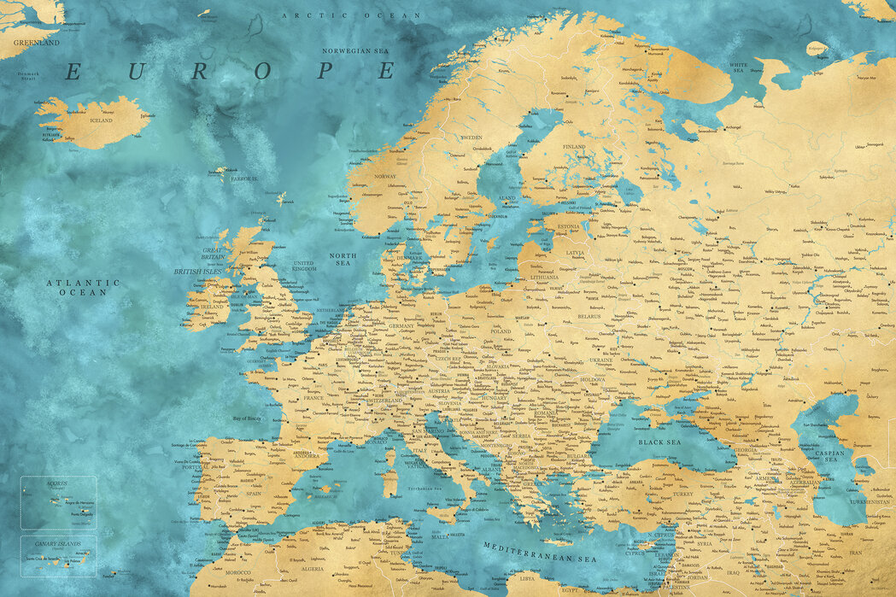

Hallo...
... und willkommen auf unserer "Maps of Tabletop" website. Hier wirst du bald alle Infos finden, die sich um die Sommer Kampagne eines Tabletop Spieles in Grazer Fan Gemeinde drehen.
... und willkommen auf unserer "Maps of Tabletop" website. Hier wirst du bald alle Infos finden, die sich um die Sommer Kampagne eines Tabletop Spieles in Grazer Fan Gemeinde drehen.